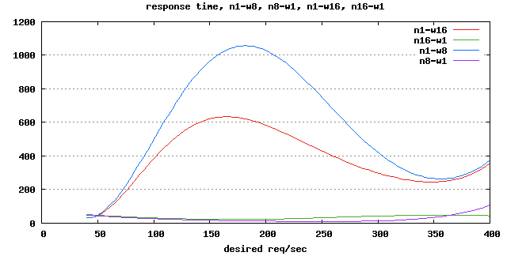
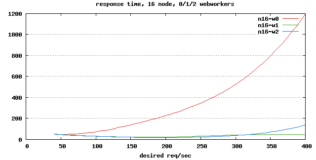

Modules Made Awesome
Lessons Learned from YUI Loader on Node.js
Reid Burke
@reid
Performance is important.
Performance shouldn't be hard.

Over 200 modules. Include only what you need.
YUI 3 and Modules
We ship things in small modules.
Instead of the entire library, your pages get only what they need.
Apps built with YUI can leverage this framework, too.
Where you find a loader...
...you'll find dependencies.
How do you manage dependencies?
One way: YUI Configurator
Are we done?
No.
- Manually updating a combo URL isn't a scalable way to manage your dependencies.
- Templates should be able to include script that defines what it needs.
- This should be handled automatically.
YUI Loader
In YUI 3, module loading is baked in.
YUI().use("yql", function (Y) {
// yql is attached to Y.YQL
Y.YQL("SELECT * FROM social.updates.search" +
" WHERE query='yui'", updateSite);
});
Scripts just tell the page what it needs.
No need to implement your own JS dependency manager.
Why Client-Side Modules, again?
- Increases performance: less code to deliver, parse
- Manage complexity: reduces cognitive load
What's the problem?
Developers often choose simplicity or performance. It's hard to get both.
And if this process is hard, development is harder on you.
In YUI 3, it's easier to manage complexity.
However, running YUI Loader on the client-side isn't free.
- Module metadata download. Cachable.
- Parsing metadata and calculating from it. Not cached, happens over and over.
We never want to choice to be between simplicity or performance.
Introducing: YUI Loader Server.
YUI Loader as a web service.
Configurator-style Loading
Why build your own URLs, though?
There's an even better way...
Client-side API
With YLS, you'd use the same code as before.
YUI().use("yql", function (Y) {
// yql is attached to Y.YQL
Y.YQL("SELECT * FROM social.updates.search" +
" WHERE query='yui'", updateSite);
});
Instead of downloading, parsing, and calculating module dependencies in the browser, we ask YLS for them.
http://yui.yahooapis.com/load?m=yql
&env=yui&v=3.3.0&tests=0:1;1:0;2:0;3:1
YLS is Fast
Dependency calculation is done on the server. Therefore, we get:
- Faster calculation on the server-side JS environment.
- No need to download module metadata like before.
YLS is Smart
When you go to the next page, the entire YLS response is cached.
- Zero calculation time: it's already been done.
- Likely has been done by a previous visitor. Fast!
It's cached:
- In the browser, with far-future Expires headers.
- In the server, with its internal cache.
YLS is Personal
This isn't for just YUI's own modules.
If you host your own server, it'll be able to handle your app's modules too.
Benchmark
Initial page load
A bit faster, since no metadata is downloaded and the server-side JavaScript calculates faster than your browser.
Second page load
Cached response. Calculation doesn't happen anymore.
If the initial page load was done by someone else, you'll be faster from the start!
With YUI 3.4.0, you'll be able to host YLS yourself.
But you won't need to...
YUI will provide YUI Loader Server on Yahoo!'s CDN.
YUI 3.4.0
Enabled with a config flag.
<script src="//yui.yahooapis.com/
3.4.0/build/yui/yui-min.js"></script>
<script>
YUI({
yls: true
}).use("node", function (Y) {
Y.one("body").append(
Y.Node.create("It works!"));
});
</script>
Details Matter
Capability-based loading
The small YUI seed, which provides the use() API, includes feature tests that are serialized into the YLS request.
The server imports this client-side information when loading modules.
Modules already downloaded
Modules already on the page are sent to the server. Subsequent calls to use() will only download modules not yet on the page.
/load?m=autocomplete&env=node,event-custom-base,yui
&tests=0:1;1:0;2:0;3:0;4:1;5:1;6:0
This URL is cache-friendly.
We're using an early version of YLS in production on YUILibrary.com.
We're working hard to bring this to everyone in 3.4.0.
What else did we learn from doing this?
How do we make it scale?
The Basics: Server-Side YUI
Created by Dav Glass. (@davglass)
https://github.com/davglass/nodejs-yui3
Allows YUI to easily run on Node.js.
- BSD licensed, open source.
- Ready to use today.
Scaling YUI Loader
YUI Loader performs a relatively expensive JavaScript computation.
JavaScript is single-threaded.
While computation is happening, server requests pile up.
It's Important to Test
We did a simple test of YLS on a machine with 2 CPU cores.
Here's the difference between scaling with:
- Two servers spawned with Spark2
- One server with two YUI Loader workers

Avoid Blocking
Node.js memory usage skyrockets when you let requests pile up.
If you're doing anything expensive in JS, use a seperate process.
Image processing, mathematics, etc.
We're using WebWorkers for Node.js by Peter Griess.
Test Everything
We're in a habit of finding the best performance in testing.
Don't guess!
Best YLS performance on 16 cores: 16 YLS processes, each with 1 YUI worker.
Various configurations

- n = Node.js YLS server processes
- w = YUI Loader worker processes
YUI Loader: inline vs. workers

Stress Testing Node.js Servers
For small runs (less than 1 hour), nodeload works well.
For long-term runs, use httpperf.
Client-Side Performance Testing
We wanted to measure the time between:
- The onload event of the YUI seed JS file, and
- The execution of YUI's use() callback, when it's ready to run.
I wasn't able to do this with JSPerf, since I need a clean slate for each run.
Testing with Iframes
I used the YUI Performance Tool, which itself uses sandboxed iframes to run tests.
- Available under
sandbox/performancein the YUI 3 GitHub repository. YUI().use("gallery-sandbox")for sandboxed iframes.
Iframe Sandbox for Unit Tests
We're using the same sandbox module now to test YUI's use() API for 3.4.0.
Useful for testing with a clean slate each test run.
Connect Middleware
- YLS doesn't use any default middleware.
- Middleware order matters.
- Bookend middleware: normalize request and response objects. Makes upgrading Connect very easy.
- Helper methods, like
res.message(404, "Module not found.")to send error messages from inside error handling middleware and request handlers. - Override its default 404 by attaching a router with a catch-all handler last.
Additional Node.js Lessons
Code quality: JSLint. https://github.com/reid/node-jslint
HTTP testing: Pact. https://github.com/reid/pact
Annotated code: Docco with JSDoc. https://github.com/reid/docco
Client-Side Lessons
- What if there's more than one use() call?
- What if 3rd party modules are used with YLS-served modules?
The client-side is the hardest part, so far.
We're working on making this really robust.
The Future
- YUI 3.4.0.
- Open-source YLS, for your own modules.
Food for Thought
- Using YUI modules only on the server?
- Option for Require.js on the client?
There's a lot of possibilities!
Recap!
Recap
- Client-side module loading is hard.
- Feature testing is important.
- YUI Loader Server will make this a bit easier.
- Don't settle for inefficient websites.
- One size doesn't fit all: test for yourself.
Thanks.
- @reid on Twitter
- rburke@yahoo-inc.com
Hack This Deck
- Source code: http://github.com/reid/decks
- Slideshow system built on YUI 3: http://github.com/reid/upstage